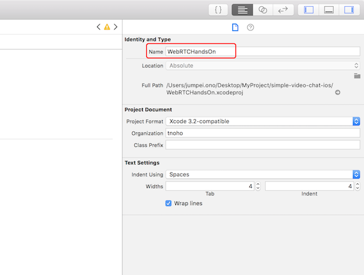
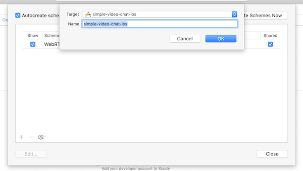
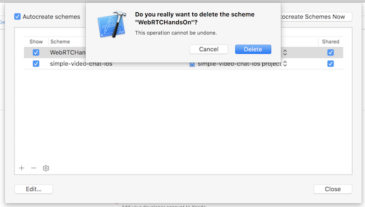
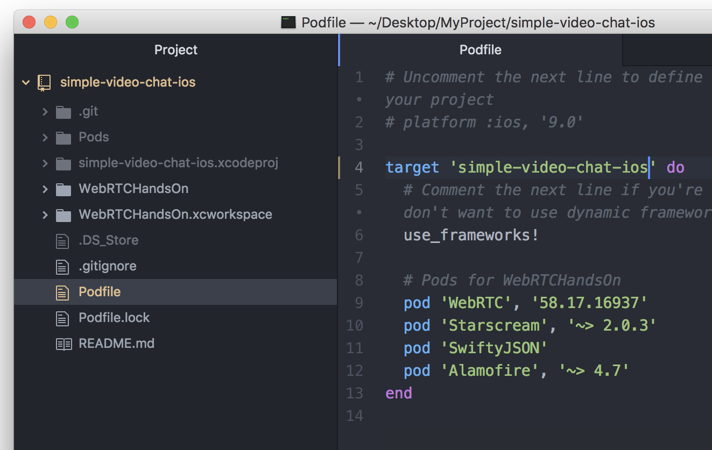
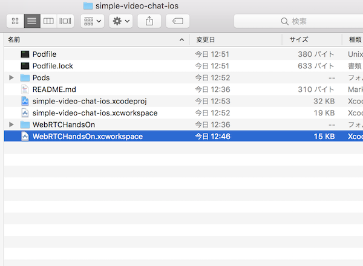
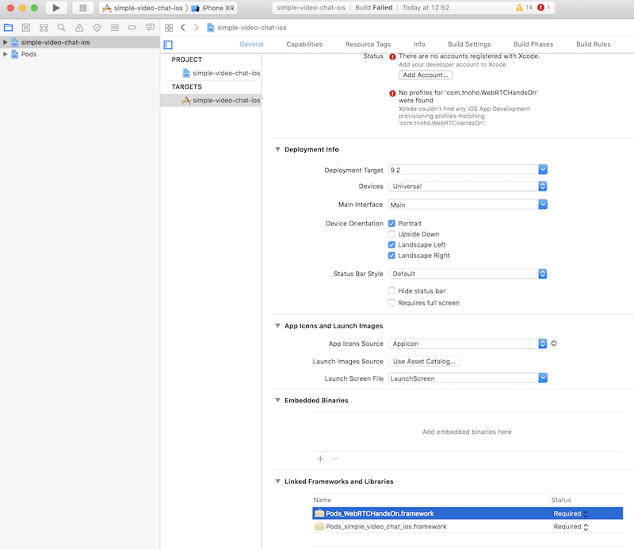
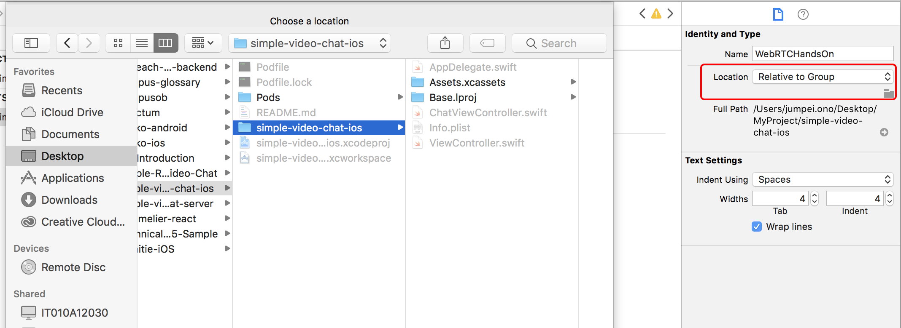
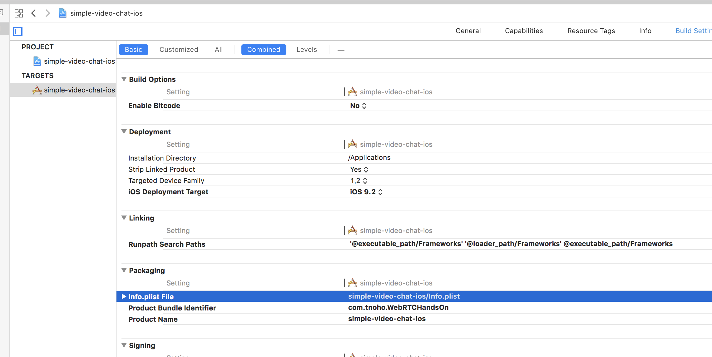

Xcode10でプロジェクト名を変更する
こちらの記事を参考にさせていただきました。
ありがとうございます！
参考記事の方が丁寧に書いてありますので、わからないことがあったら是非そちらを
Xcodeでプロジェクト名を変更する方法 (Xcode8.0)
今回は WebRTCHandsOn というプロジェクト名を、simple-video-chat-ios というプロジェクト名に変更します。
1.Xcodeからプロジェクト名を変更する 右側ペインにその詳細が表示されるので「Identity and Type」のNameを新しいプロジェクト名(ここではsimple-video-chat-ios)に修正する。

確認とアラートが出るので、 rename ボタンを押してリネームする。

2.Schemeの変更
画面上部のメニューから「Product」-> 「Scheme」->「Manage Schemes」 を選択します。
アラートが表示されたら左下の 「+」 ボタンを選択し、新しいターゲット(リネーム後のターゲーット)を追加します。

新しいターゲットを追加したら、古いターゲットを削除し、 close します。

3.Podfileの修正
CocoaPodsを使っている場合は、podファイルも修正が必要です。
targetの箇所に新しいプロジェクト名を入力してください。

podfileの修正が完了したら、Podディレクトリを削除し、 もう一度 pod install を行います。
前のプロジェクト名の.workplaceファイルは不要なので削除します。

pod installが終わったら、General の Linked Frameworks and Libraries を開き、半透明になっている古いプロジェクト名のLinkを削除します。

この状態でビルドし、エラーが出ないことを確認してください。
5.ディレクトリ名の修正
最後に手作業でディレクトリ名を新しい名前に修正します。
ディレクトリ名を修正するとXcodeが認識しなくなってしまうので、 Identity and Type で新しいディレクトリを登録します。

info.plist の読込先も間違っているので修正します。

これで完了です！
2019/06/20 追記
リネームを行うとUnitTest, UITest が実行できなくなってしまいました。
Target を一度削除して、作り直すとうまく動作しました。